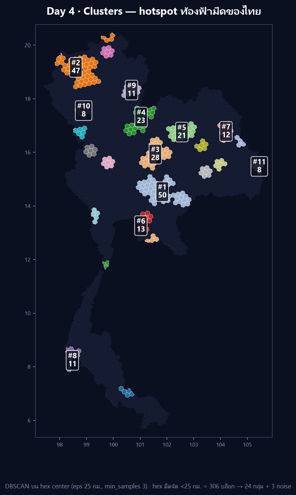

Day 4 · Clusters — 306 หกเหลี่ยมฟ้ามืด จับกลุ่มเป็น 24 hotspot

Day 1 เราปักจุด · Day 2 เราลากเส้น · Day 3 เราวัดพื้นที่ วันนี้ (ธีมทางการ Clusters) ถามต่อว่า — “พื้นที่ฟ้ามืดของไทยมันจับกลุ่มกันตรงไหน หรือกระจายเท่า ๆ กันทั้งประเทศ?” คำถามประเภท “ก้อน / กลุ่ม / hotspot” ต้องใช้ clustering
ที่มาของแผนที่
ต่อจาก Day 3 ตรง ๆ: ผมมีหกเหลี่ยม H3 ระดับ 5 อยู่ 1,738 บล็อก แต่ละบล็อกมีค่า km_nearest = ระยะถึงจุดอนุรักษ์ท้องฟ้ามืดของ NARIT ที่ใกล้ที่สุด
ถ้าจะหา “กลุ่ม” ต้องตอบก่อนว่า จะจับกลุ่มของอะไร ผมเลือก hex ที่ มืดจัด (km_nearest < 25 กม.) ทั้งหมด 306 บล็อก แล้วรัน DBSCAN บนจุดศูนย์กลางของ hex จากนั้นทาสี hex ทั้งก้อนตาม label ที่ได้ (ไม่ใช่แค่จุด)
ทำไม DBSCAN ไม่ใช้ K-means? เพราะ (1) ไม่ต้องเดาจำนวนกลุ่ม k ล่วงหน้า (2) จับกลุ่มรูปทรงอิสระตามพื้นที่จริง ไม่บังคับให้กลม (3) แยก “จุดที่อยู่โดด” เป็น noise ได้ ซึ่งตรงกับคำว่า hotspot ในธีมวันนี้เป๊ะ
ผมลองอีกทางก่อนหน้าคือ
h3.compact_cells(ยุบ hex ลูกเป็น hex พ่อ) แต่กับเซตที่ กระจายแบบนี้มันยุบไม่ขึ้น — ได้ 258 “โซน” จาก 306 บล็อก (ยุบจริงแค่ ~48 ครั้ง) ภาพออกมาเป็นหิมะโปรย ไม่ใช่ก้อน DBSCAN จึงชนะขาด (รายละเอียดในบทเรียน)
ผลลัพธ์

306 บล็อก → 24 กลุ่ม + 3 บล็อก noise รวมพื้นที่ที่จับกลุ่มได้ 87,463 ตร.กม. 10 กลุ่มแรกเรียงตามขนาด:
| # | บล็อก | พื้นที่ | จังหวัดหลัก | จุดฟ้ามืดที่ใกล้สุด |
|---|---|---|---|---|
| 1 | 50 | 14,895 ตร.กม. | นครราชสีมา–สระแก้ว | หาดชมตะวัน (อุทยานทับลาน) |
| 2 | 47 | 13,578 ตร.กม. | เชียงใหม่ | ป่าสนวัดจันทร์ (กัลยาณิวัฒนา) |
| 3 | 28 | 8,296 ตร.กม. | ชัยภูมิ | เขตรักษาพันธุ์ฯ ภูเขียว |
| 4 | 23 | 6,607 ตร.กม. | พิษณุโลก–เลย | อุทยานฯ ภูหินร่องกล้า |
| 5 | 21 | 6,160 ตร.กม. | ขอนแก่น | อุทยานฯ ภูเวียง |
| 6 | 13 | 3,635 ตร.กม. | ฉะเชิงเทรา–ชลบุรี | หอดูดาวเฉลิมพระเกียรติฯ ฉะเชิงเทรา |
| 7 | 12 | 3,483 ตร.กม. | มุกดาหาร–สกลนคร | ทุ่งโนนป่าก่อ (ภูสีฐาน) |
| 8 | 11 | 2,754 ตร.กม. | พังงา–ภูเก็ต | บ่อแสนวิลล่า |
| 9 | 11 | 3,220 ตร.กม. | น่าน | อุทยานฯ ศรีน่าน |
| 10 | 8 | 2,369 ตร.กม. | ลำพูน | อุทยานฯ แม่ปิง |
สิ่งที่ผมไม่คาดคิด:
- hotspot ใหญ่สุดคือ “ตะวันออก” ไม่ใช่ “เหนือ” — ก้อน #1 อยู่รอยต่อ นครราชสีมา–สระแก้ว (14,895 ตร.กม.) ใหญ่กว่าก้อนเชียงใหม่ที่ผมคิดว่าต้องมาก่อน เพราะโซนทับลานมีจุดฟ้ามืดหลายแห่งอยู่ชิดกันจน hex เชื่อมเป็นผืนเดียว
- อีสานไม่ใช่พื้นที่แห้งด้านดาว — มีกลุ่มของตัวเองกระจาย 7 ก้อน (ชัยภูมิ · ขอนแก่น · สุรินทร์ · มหาสารคาม · ร้อยเอ็ด · มุกดาหาร · อุบลฯ) แต่ละก้อนไม่ใหญ่แต่มีจริง คนอีสานไม่ต้องขึ้นเหนือก็ดูดาวได้
- 3 บล็อก noise = “มืดแต่โดนตัดขาด” — เกาะพะลวย (สุราษฎร์ฯ) กับอีก 2 บล็อก ติดอุทยานฯ เขาพระวิหาร (ศรีสะเกษ) มืดจัด (
km13–25) แต่ไม่มี hex เพื่อนบ้านที่ มืดเท่าในรัศมี → DBSCAN ปล่อยเป็น noise ตรงกับที่ตามองเห็นว่ามันเป็น “เกาะ” จริง - 14 กลุ่มที่เหลือมีขนาด 3–7 บล็อก = hotspot ระดับอำเภอ ที่ยังเล็กเกินจะติดป้ายในภาพ
วิธีทำแบบย่อ
ขั้นที่ 1: เลือกเซตก่อน แล้วค่อย cluster
จุดสำคัญที่สุดของวันนี้: จะ DBSCAN ทั้ง 1,738 บล็อกไม่ได้ เพราะ hex grid กระจาย สม่ำเสมอทั้งประเทศ → ทุกบล็อกมีเพื่อนบ้านใกล้ ๆ เท่ากันหมด DBSCAN จะยุบเป็น blob เดียวกลืนทั้งประเทศ ผมจึงป้อนเฉพาะ hex ที่ “มืดจัด” ให้ DBSCAN หาว่า hex มืดพวกนี้กองอยู่ตรงไหนบ้าง
mask = km_nearest < 25 # เลือกเฉพาะ hex ที่มืดจัด (306 บล็อก)
X = np.radians(centers[mask]) # จุดศูนย์กลาง hex เป็นเรเดียนขั้นที่ 2: DBSCAN บนพิกัดกลม (haversine)
from sklearn.cluster import DBSCAN
R = 6371.0088
lab = DBSCAN(eps=25.0 / R, min_samples=3, metric="haversine").fit_predict(X)metric="haversine" รับพิกัดเรเดียนแล้ววัดระยะเป็นกิโลเมตรจริง (ไม่ต้อง project) กับดักเรื่อง eps: ระยะระหว่างจุดศูนย์กลาง hex ที่ชิดกัน ≈ 18 กม. ถ้าตั้ง eps < 18 จะไม่มีคู่ไหนเชื่อมถึงกัน → ทุกบล็อกกลายเป็น noise ถ้า eps ใหญ่เกิน (เช่น 30–40) กลุ่มเล็กจะเริ่มเชื่อมกันเป็นก้อนโต ผมเลือก 25 กม. = เชื่อมเฉพาะ hex ที่แตะกันจริง ๆ (บวกเผื่อ curvature นิดหน่อย) และตั้ง min_samples=3 เพื่อบังคับว่า “กลุ่ม” ต้องมีอย่างน้อย 3 บล็อก ไม่งั้นเป็นแค่คู่โดด
ขั้นที่ 3: ทาสี hex ทั้งก้อน (ไม่ใช่แค่จุด)
for i, l in zip(np.where(mask)[0], lab):
if l == -1:
continue # noise = ไม่ทา ให้เป็น backdrop
color = palette[cluster_rank.index(l)]
for ring in clipped_rings(cells[i]): # ใช้ geometry ที่ตัดขอบประเทศแล้วจาก Day 3
draw_polygon(ring, facecolor=color, edgecolor="white", lw=0.3)ผมวาด hex ด้วย geometry ที่ clip แล้วจาก Day 3 (ไม่ใช่ cell_to_boundary ดิบ) เพื่อให้บล็อกตรงชายแดนไม่ล้นออกทะเล/ออกประเทศเพื่อนบ้าน — ไม่งั้นรูปทรงไทยจะเสีย และ backdrop เทา 1,738 บล็อกยังวาดไว้ทั้งประเทศ เพื่อให้ “ก้อนสี” ลอยอยู่ในบริบท ว่าอยู่ตรงไหนของไทย ไม่ใช่ลอยบนพื้นดำเปล่า ๆ
ไฟล์ day04_clusters.geojson (303 features พร้อม cluster / rank / size / nearest) เปิดใน QGIS หรือเอาไปทำแผนที่ interactive ต่อได้เลย
บทเรียน
- เลือกเซต input = นิยาม “cluster” ของคุณ — DBSCAN ไม่ได้บอกว่าอะไรควรถูกกลุ่ม มันแค่บอกว่าอะไร “อยู่ชิดกัน” คำถาม “กลุ่มของอะไร” (มืดจัด? <50กม.? ทุก hex?) ให้ผลต่างกันคนละเรื่อง ผมลองทั้ง 3 แบบจนได้คำตอบว่า <25กม. เล่าเรื่อง hotspot ได้ชัดสุด
compact_cellsไม่ใช่เครื่องมือหา cluster — มันยุบ hex ลูก→พ่อเมื่อบล็อกครบ 7 ลูก เท่านั้น กับเซตที่กระจาย ๆ มันจึงแทบไม่ยุบ (258 โซน/306 บล็อก) ถ้าอยากได้ “ก้อน” จาก polygon ให้ใช้ DBSCAN บน centroid หรือ flood-fill ตามความต่อเนื่อง- eps ต้องสัมพันธ์กับระยะ grid ไม่ใช่ความรู้สึก — hex res5 ชิดกัน ~18 กม. ตั้ง eps ต่ำกว่านี้คือได้ noise ทั้งดง, สูงกว่านี้คือ blob กลืนประเทศ ตัวเลข eps ที่ดีจึงผูกกับ resolution ของ grid ที่เลือก
- คลัสเตอร์ใหญ่สุด ≠ จุดที่คนนึกถึงก่อน — ผมนึกว่าเหนือต้องมาที่หนึ่ง แต่ข้อมูลชี้ว่าตะวันออก (ทับลาน–โคราช–สระแก้ว) กินพื้นที่มืดจัดมากกว่า นี่คือเหตุผลที่ต้องรันจริงก่อนสรุปในโพสต์ (บทเรียนเดียวกับ Day 3 เรื่องอย่าเชื่อโดยยังวัด)
- noise ก็เล่าเรื่องได้ — 3 บล็อกที่ DBSCAN ปล่อยไว้ ไม่ใช่ข้อผิดพลาด มันคือ “พื้นที่มืดแต่โดดเดี่ยว” ที่ควรค่าแก่การตั้งคำถามว่าทำไมมันถึงอยู่ลำพัง
พรุ่งนี้ธีม Senses: Sight (ทางการวันที่ 5 พ.ย. — “How do you see something? Maybe map a viewshed?”) ต่อจากนี้สวยเลย: คำนวณ viewshed จากหอสังเกตการณ์ แต่ละแห่งว่า “มองท้องฟ้าเห็นบริเวณกว้างแค่ไหน” แล้วทับลงบน hex ที่เรามี ⬡